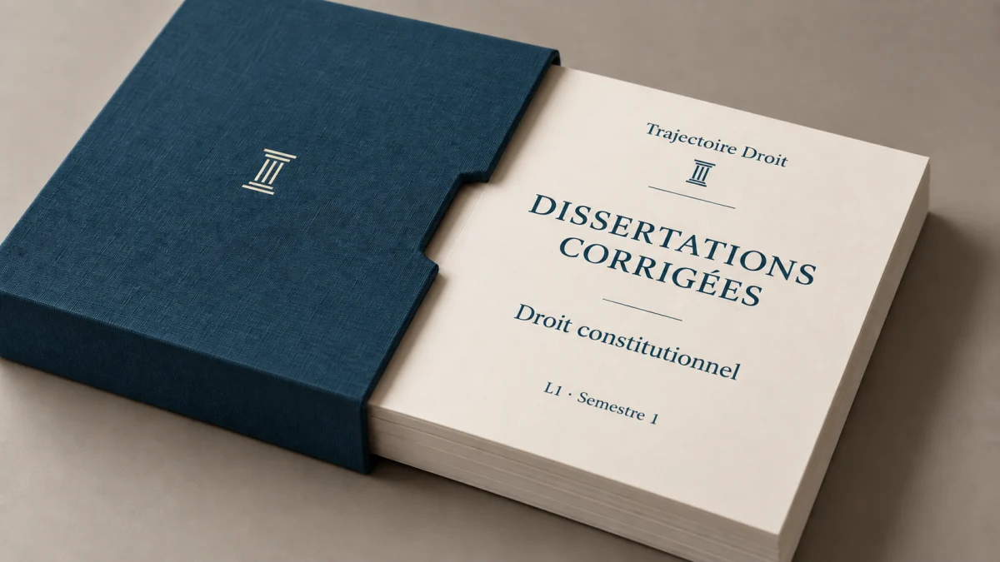

Sujets de droit constitutionnel L1 semestre 1, avec une dissertation corrigée en entier
Les sujets de droit constitutionnel L1 semestre 1 portent sur l'État et la Constitution. Ils prennent la forme d'une dissertation, d'un commentaire de texte ou de décision, ou de questions de cours. Tu trouves ici douze sujets classés par thème, avec ce que la copie doit traiter pour chacun. Une dissertation est corrigée en entier, et six questions de cours montrent le niveau de détail attendu.
Les sujets changent d'une faculté à l'autre, mais ils reprennent souvent les mêmes thèmes.
Le correcteur regarde d'abord si ton introduction définit les mots du sujet, puis si ton plan répond à la question posée. Tu prépares donc les définitions des notions et quelques textes à citer, comme l'article 16 de la Déclaration de 1789 ou l'article 3 de la Constitution de 1958. Si ta faculté étudie déjà la Ve République au premier semestre, le TD de droit constitutionnel L1 corrigé propose en plus une dissertation sur le référendum.

Les dissertations corrigées du semestre 1
Droit constitutionnel L1 S1, dix dissertations corrigées en 53 pages
Chaque sujet commence par une page de décorticage, qui sert de brouillon. J'y analyse les mots clés, puis je nomme les deux idées qui s'opposent dans le sujet. Ce brouillon se termine par la problématique (la question à laquelle la copie répond) et par le plan. La copie modèle vient ensuite, avec une introduction et un plan en deux parties. Les dix sujets du recueil sont différents des douze sujets de cette page.
- Dix sujets corrigés, du brouillon à la copie rédigée
- Une problématique et un plan au brouillon écrits pour chaque sujet
- Accès à vie et mises à jour comprises
Paiement sécurisé. Tes fichiers sont envoyés par email dès la confirmation.
Quels sujets tombent en droit constitutionnel au premier semestre ?
Au premier semestre, tu étudies l'État et la Constitution, puis la manière dont le pouvoir est partagé entre les institutions. Les sujets suivent ce programme, sous quatre formes d'exercice.
Ma fiche complète du semestre compte dix-neuf chapitres. Les deux premiers définissent le droit constitutionnel et sa méthode, et je regroupe ici les dix-sept autres en cinq thèmes.
- L'État : ses éléments et ses formes (unitaire, fédérale, régionale), puis la souveraineté.
- La Constitution : sa notion, sa place face aux autres règles de droit, puis sa révision et son contrôle.
- La démocratie : les modes d'exercice du pouvoir et le suffrage, avec les modes de scrutin.
- Les pouvoirs : la séparation des pouvoirs et les régimes parlementaire et présidentiel, avec les exemples des États-Unis et du Royaume-Uni.
- L'histoire constitutionnelle : de la Révolution au Second Empire, puis la IIIe et la IVe République.
En janvier 2019, les étudiants de première année de licence à l'université Panthéon-Assas (centre de Melun) avaient le choix entre une dissertation et un commentaire. La dissertation portait sur « Avons-nous besoin de la notion de souveraineté pour définir l'État ? ». Le commentaire portait sur un extrait de Georg Jellinek, L'État moderne et son droit (1911), qui oppose l'État centralisé à l'État décentralisé. Les étudiants en traitaient donc un seul, en trois heures et sans aucun document.
La dissertation
Le sujet est une question ou une notion en quelques mots, comme « La souveraineté ». La copie comprend une introduction en sept étapes, puis un plan en deux parties qui répond à la question. La méthode de la dissertation juridique détaille chaque étape.
Le commentaire de texte
Le sujet donne un extrait d'un auteur ou d'un texte de loi, par exemple l'article 16 de la Déclaration de 1789. Tu trouves la thèse de l'auteur (l'idée qu'il défend), puis tu la discutes avec ton cours.
Le commentaire de décision
Le sujet donne une décision du Conseil constitutionnel, comme celle du 16 juillet 1971. Ce Conseil vérifie qu'une loi respecte la Constitution, ce que l'on appelle le contrôle de constitutionnalité des lois. Ta copie présente les faits, puis explique ce que la décision change pour ce contrôle.
Les questions de cours
Chaque question demande une définition ou une distinction en quelques lignes. Six questions corrigées figurent plus bas.
Douze sujets de droit constitutionnel L1, thème par thème
Pour chaque sujet, tu vois la forme de l'exercice et ce que la copie doit développer. Ces douze sujets sont différents de ceux du recueil de dix dissertations, qui porte par exemple sur la révision de la Constitution et sur la justice constitutionnelle. La dissertation corrigée plus bas est un treizième sujet.
| Le sujet | La forme | Ce que la copie traite |
|---|---|---|
| L'État et la souveraineté | ||
| « Avons-nous besoin de la notion de souveraineté pour définir l'État ? » (sujet posé à Assas en janvier 2019) | Dissertation | Tu pars de la définition de l'État par trois éléments (le territoire, la population et un pouvoir organisé), puis de celle de Carré de Malberg, qui y voit une puissance supérieure qui commande et qui contraint les membres du groupe. Tu juges ensuite si cette puissance doit être souveraine pour qu'il y ait un État. |
| « L'État unitaire est-il nécessairement centralisé ? » | Dissertation | Un État unitaire possède un seul pouvoir politique. La centralisation concerne la façon dont l'État répartit les décisions entre le niveau national et les collectivités locales. L'article 1er de la Constitution dit que l'organisation de la France « est décentralisée ». |
| « Nation et peuple » | Dissertation sur une notion en deux mots | L'article 3 de la Déclaration de 1789 place la souveraineté dans la nation, et l'article 3 de la Constitution de 1958 dit qu'elle appartient au peuple. Tu définis les deux mots, puis tu montres comment le texte actuel les relie. |
| « Les rapports entre les pouvoirs publics sous la IIIe République » | Dissertation d'histoire constitutionnelle | Les lois constitutionnelles de 1875 organisent les rapports entre le Président de la République et les deux chambres. Par exemple, l'article 5 de la loi du 25 février 1875 permet au Président de dissoudre la Chambre des députés (mettre fin à son mandat avant la date prévue) avec l'avis favorable du Sénat. L'article 6 rend les ministres responsables devant les chambres, ce qui permet aux chambres de les obliger à démissionner. Tu étudies ces textes, puis l'usage qui en a été fait. |
| La Constitution | ||
| « Qu'est-ce qu'une Constitution ? » | Dissertation sur une définition | Tu distingues la Constitution formelle de la Constitution matérielle, définies dans l'introduction de la dissertation corrigée plus bas. L'article 16 de la Déclaration de 1789 te donne un critère de contenu à discuter. |
| Commentaire de l'article 16 de la Déclaration des droits de l'homme et du citoyen de 1789 | Commentaire de texte | Le texte dit que « toute société dans laquelle la garantie des droits n'est pas assurée, ni la séparation des pouvoirs déterminée, n'a point de Constitution ». Tu expliques ces deux conditions, puis tu discutes si elles suffisent à définir une Constitution. |
| « Le bloc de constitutionnalité est-il une création du juge ? » | Dissertation | Le Préambule de la Constitution de 1958, texte placé en tête de la Constitution, renvoie à d'autres textes, que la question de cours sur le bloc de constitutionnalité énumère. Tu montres comment le Conseil constitutionnel a décidé, le 16 juillet 1971, d'appliquer ce Préambule comme une règle obligatoire. |
| « La Constitution est-elle toujours au sommet de la hiérarchie des normes ? » | Dissertation | L'article 55 de la Constitution donne aux traités régulièrement ratifiés « une autorité supérieure à celle des lois », à condition que l'autre État signataire applique aussi le traité. Tu examines si cette règle place aussi les traités au-dessus de la Constitution. |
| Décision du Conseil constitutionnel du 16 juillet 1971, Liberté d'association | Commentaire de décision | La décision porte sur une loi qui complète la loi du 1er juillet 1901 sur les associations. Tu présentes ce que le Conseil juge, puis la valeur qu'il donne au Préambule. La décision Liberté d'association de 1971 est expliquée à part. |
| La démocratie | ||
| « Le suffrage universel est-il un droit ou une fonction ? » | Dissertation | L'article 3 de la Constitution dit que le suffrage (le vote) est « toujours universel, égal et secret » et que sont électeurs, « dans les conditions déterminées par la loi », « tous les nationaux français majeurs des deux sexes ». Tu te demandes si voter est un droit que chaque citoyen détient ou une fonction que la loi confie aux électeurs. La question de cours sur la souveraineté nationale et la souveraineté populaire t'aide à répondre. |
| « La démocratie semi-directe est-elle un compromis entre démocratie directe et démocratie représentative ? » | Dissertation | L'article 3 de la Constitution dit que le peuple exerce la souveraineté « par ses représentants et par la voie du référendum ». Le référendum est un vote direct des électeurs sur un texte. Les deux modes d'exercice figurent donc dans le texte, et tu défends ensuite que leur combinaison forme un compromis, ou un système à part. |
| Les pouvoirs et les régimes politiques | ||
| « Régime parlementaire et régime présidentiel : une distinction encore utile ? » | Dissertation | Les deux régimes se distinguent par les moyens d'action de l'exécutif et du Parlement l'un sur l'autre, détaillés dans les questions de cours. Tu compares la France et les États-Unis, puis tu juges si cette distinction décrit encore la réalité. |
Tu trouves aussi, gratuitement, la dissertation corrigée sur la séparation des pouvoirs. Quand un sujet cite un article ou une décision, tu commences ton brouillon par ce texte, parce qu'il indique les deux idées qui s'opposent dans le sujet.
Dissertation corrigée : « La Constitution doit-elle toujours être écrite ? »
Ce sujet de première année demande de définir la Constitution, puis de comparer la France avec le Royaume-Uni et Israël. Au brouillon, tu analyses d'abord les mots du sujet, ce que j'appelle le décorticage. Tu écris ensuite l'introduction et le plan.
Le décorticage du sujet
Les termes du sujet
Le mot « Constitution » a un sens formel et un sens matériel, que l'étape 2 de l'introduction définit. Une Constitution « écrite » est rédigée dans un ou plusieurs documents officiels, comme les trois lois constitutionnelles de 1875. Les mots « doit-elle toujours » demandent si l'écrit est obligatoire dans tous les cas, et un seul État dont la Constitution n'est pas entièrement écrite suffit pour répondre non.
La tension du sujet
L'écrit donne une règle connue de tous et placée au-dessus des lois, ce qui paraît indispensable pour limiter le pouvoir. Le Royaume-Uni vit toutefois avec des règles que personne n'a rédigées, et les Constitutions écrites elles-mêmes se complètent par la pratique et par le juge.
L'introduction rédigée en sept étapes
1. L'accroche
En 1803, dans l'affaire Marbury contre Madison, John Marshall, président de la Cour suprême des États-Unis, pose cette question (traduction libre) : « À quoi bon limiter les pouvoirs, et à quoi bon consigner cette limite par écrit, si ceux qu'elle doit retenir peuvent la franchir à tout moment ? » Pour lui, l'écrit rend la limite visible et permet de faire écarter la loi qui la dépasse.
2. La présentation du sujet et la définition des termes
La Constitution a deux sens. Au sens formel, elle forme un texte supérieur aux lois, que seule une procédure spéciale permet de réviser. Au sens matériel, elle regroupe les règles qui organisent le pouvoir, quelle que soit leur source. L'article 16 de la Déclaration des droits de l'homme et du citoyen de 1789 retient un critère de contenu, puisqu'il dit que toute société dans laquelle la garantie des droits n'est pas assurée, ni la séparation des pouvoirs déterminée, n'a point de Constitution. Une Constitution écrite se trouve dans un ou plusieurs textes officiels. En revanche, une Constitution coutumière repose en partie sur des règles que personne n'a rédigées, par exemple des usages que les responsables politiques respectent.
3. La délimitation du sujet
Ce sujet conduit à comparer la France avec le Royaume-Uni et Israël. La copie évoque le contenu des Constitutions et leur révision pour montrer le rôle de l'écrit, et elle laisse le reste à d'autres sujets. Les États-Unis apparaissent pour la Constitution de 1787 et pour la décision de 1803.
4. Le contexte et le rappel historique
L'idée d'une Constitution rédigée dans un document propre s'impose à la fin du XVIIIe siècle. En effet, les États-Unis rédigent leur Constitution fédérale en 1787, puis la France se donne sa première Constitution écrite le 3 septembre 1791, avec la Déclaration de 1789 placée en tête. Le Royaume-Uni garde en revanche une Constitution faite de lois votées au fil des siècles, auxquelles s'ajoutent des décisions de justice et des usages. En France, enfin, le texte en vigueur est la Constitution du 4 octobre 1958. Son Préambule renvoie à d'autres textes, que le Conseil constitutionnel applique aussi.
5. L'intérêt du sujet
La plupart des États ont aujourd'hui un texte constitutionnel, ce qui rend la question utile pour comprendre leurs institutions. Sur le plan théorique, le sujet oblige à dire à quoi sert l'écrit.
6. La problématique
Dès lors, l'écrit est-il la condition pour qu'une Constitution limite réellement le pouvoir, ou seulement la technique la plus répandue pour y parvenir ?
7. L'annonce de plan
Une Constitution peut exister sans être entièrement écrite (I). Mais l'écrit reste une garantie solide contre les décisions prises sans règle, à condition que la pratique et le juge l'accompagnent (II).
Le plan détaillé et la copie rédigée
I. Une Constitution peut exister sans être entièrement écrite
Pour cette partie, tu pars de l'article 16 de la Déclaration de 1789, puis tu cherches un État dont la Constitution repose sur des règles non écrites.
A. La Constitution se reconnaît à son contenu et peut être écrite en plusieurs textes. L'article 16 de la Déclaration de 1789 retient deux conditions de contenu, la garantie des droits et la séparation des pouvoirs. Ainsi, une société qui ne les remplit pas n'a point de Constitution. Le critère porte donc sur le contenu, quelle que soit la forme du texte.
Israël a une Constitution écrite par morceaux. En 1950, la Knesset, son Parlement, a décidé de construire la Constitution par chapitres, chacun adopté sous la forme d'une loi fondamentale. Ensuite, dans l'arrêt United Mizrahi Bank du 9 novembre 1995, la Cour suprême d'Israël a admis que la Knesset adopte les lois fondamentales avec un statut constitutionnel, supérieur aux lois ordinaires. La Cour peut donc écarter une loi ordinaire qui contredit une loi fondamentale, comme celles de 1992 sur les droits de la personne.
B. Le Royaume-Uni appuie sa Constitution sur des règles non écrites. Le Royaume-Uni n'a pas de document constitutionnel unique. Sa Constitution rassemble toutefois des lois, comme la déclaration des droits de 1689 (Bill of Rights) ou la loi de 1998 sur les droits de l'homme (Human Rights Act). Elle comprend aussi des décisions de justice et des conventions, c'est-à-dire des usages que les responsables politiques respectent sans qu'un juge les impose. Par exemple, le monarque donne en pratique son accord aux lois votées par le Parlement. Il nomme aussi Premier ministre la personne qui a le soutien de la Chambre des communes, l'assemblée élue par les citoyens, le plus souvent le chef du parti majoritaire.
À la fin du XIXe siècle, le juriste Dicey a distingué ces conventions des lois, parce que seules les lois sont appliquées par les tribunaux.
Les juges britanniques appliquent pourtant les principes de cette Constitution. Ainsi, le 24 septembre 2019, dans l'affaire Miller, la Cour suprême du Royaume-Uni a jugé à l'unanimité de ses onze juges que la prorogation du Parlement était nulle. Une prorogation met fin à la session en cours, et les deux chambres ne siègent plus jusqu'à la session suivante. Le Premier ministre avait conseillé à la reine d'en décider une. Or cette interruption, prévue pour durer cinq semaines, empêchait le Parlement de siéger sans raison valable. La Cour a rappelé que le Parlement fait la loi et contrôle le gouvernement, et qu'un Premier ministre ne peut pas l'écarter de ce rôle sans motif sérieux.
II. L'écrit reste une garantie solide, à condition de l'accompagner
Tu montres d'abord ce que l'écrit apporte, puis ce que la pratique et le juge ajoutent.
A. L'écrit fixe la limite et la place au-dessus des lois. Dans l'affaire Marbury contre Madison, la Cour suprême des États-Unis juge qu'une loi contraire à la Constitution est nulle, et elle appuie ce raisonnement sur le caractère écrit de la Constitution. L'écrit permet aussi de protéger la limite par une révision difficile, comme en France avec l'article 89. L'Assemblée nationale et le Sénat doivent voter le même texte. Ensuite, les citoyens l'approuvent par référendum. Pour un projet de révision, le Président peut choisir à la place de réunir les députés et les sénateurs en une seule assemblée, le Congrès, qui adopte alors la révision à la majorité des trois cinquièmes des suffrages exprimés.
Une Constitution de ce type s'appelle rigide. La Constitution britannique est au contraire souple, parce que le Parlement la modifie par une loi ordinaire, comme avec la loi de 1998 sur les droits de l'homme.
B. L'application de l'écrit dépend de la pratique et du juge. L'article 20 de la Constitution de 1958 confie au Gouvernement la conduite de la politique de la nation. Mais en temps normal, quand une majorité de l'Assemblée nationale le soutient, le Président fixe en pratique les grandes orientations de cette politique. Une cohabitation est une période où le Président et la majorité de l'Assemblée nationale viennent de camps opposés. La France en a connu trois entre 1986 et 2002. En revanche, pendant ces périodes, le Premier ministre dirige la politique de la nation, comme l'article 20 le prévoit.
En 1962, le général de Gaulle veut faire élire le Président au suffrage universel direct, par tous les électeurs. Or l'article 89 prévoit que le Parlement vote d'abord toute révision de la Constitution. Le général de Gaulle choisit l'article 11, qui permet de soumettre une loi directement au référendum, et les électeurs approuvent le texte. Dans sa décision du 6 novembre 1962, le Conseil constitutionnel se déclare incompétent pour contrôler cette loi, car le peuple l'a adoptée lui-même et elle exprime directement la souveraineté nationale. Une pratique que le juge refuse de contrôler peut ainsi faire évoluer le sens d'un texte écrit.
Le Conseil constitutionnel complète aussi le texte écrit. Le 16 juillet 1971, il juge contraires à la Constitution des dispositions d'une loi sur les associations, parce qu'elles violent la liberté d'association, un principe que le Préambule réaffirme. Il donne ainsi une valeur obligatoire à ce Préambule, qui renvoie à d'autres textes comme la Déclaration de 1789. La Constitution que le juge applique dépasse donc les articles de 1958.
La conclusion rédigée
Une Constitution peut exister sans être entièrement écrite. La Constitution britannique repose en partie sur des conventions que personne n'a rédigées, et ses juges en appliquent les principes. L'écrit reste pourtant un moyen solide de fixer la limite du pouvoir et de la placer au-dessus de la loi, à condition que la pratique et le juge l'appliquent. La France a d'ailleurs choisi l'écrit en 2005 pour protéger un droit nouveau, en rattachant au Préambule de sa Constitution la Charte de l'environnement de 2004.
Pour voir la même construction appliquée à un autre sujet, tu peux lire la dissertation juridique corrigée sur la jurisprudence. Pour comprendre l'étape de délimitation, l'exemple de délimitation du sujet en droit la détaille.
Six questions de cours corrigées en quelques lignes
Chaque réponse tient en quelques lignes, avec l'article ou l'auteur à citer.
Quels sont les éléments constitutifs de l'État ?
L'État repose sur un territoire, une population et un pouvoir politique organisé, que l'on appelle la puissance publique. Carré de Malberg décrit ce pouvoir comme une puissance supérieure qui commande et qui contraint les membres du groupe. Il juge le mot souveraineté justifié pour la France, mais contestable pour définir tout État, car certains États, comme les États membres d'une fédération, ne sont pas souverains.
Quelle différence y a-t-il entre souveraineté nationale et souveraineté populaire ?
La souveraineté est le pouvoir suprême de décider. Pour la souveraineté nationale, défendue par Sieyès, ce pouvoir appartient à la nation, c'est-à-dire à l'ensemble du pays pris comme un tout, qui l'exerce par ses représentants. En revanche, la souveraineté populaire s'inspire de Rousseau. Elle appartient à l'ensemble des citoyens, de sorte que chacun peut prendre part aux décisions, par exemple en votant directement une loi.
La souveraineté nationale fait du vote une fonction, c'est-à-dire une mission que la nation confie aux citoyens. La souveraineté populaire en fait un droit que chaque citoyen détient. L'article 3 de la Constitution de 1958 combine les deux, puisqu'il dit que « la souveraineté nationale appartient au peuple » et que le peuple l'exerce « par ses représentants et par la voie du référendum ».
Qu'est-ce que la hiérarchie des normes ?
La hiérarchie des normes classe les règles de droit selon leur force, chaque règle devant respecter celles qui sont placées au-dessus d'elle. En France, la Constitution et le bloc de constitutionnalité viennent en premier. Les traités viennent ensuite, puis les lois, puis les règlements (les décisions de l'administration, comme un décret du Premier ministre ou un arrêté d'un ministre). Un arrêté qui contredit un décret est donc illégal, parce que le décret l'emporte sur l'arrêté. La page sur la hiérarchie des normes détaille chaque niveau.
Quels textes forment le bloc de constitutionnalité ?
Le bloc de constitutionnalité est l'ensemble des textes que le Conseil constitutionnel applique pour vérifier qu'une loi respecte la Constitution. Il comprend la Constitution de 1958 et son Préambule, qui renvoie à la Déclaration de 1789, au Préambule de 1946 et à la Charte de l'environnement de 2004. Le Préambule de 1946 mentionne en outre les principes fondamentaux reconnus par les lois de la République (des principes posés par des lois républicaines antérieures à 1946). Le Conseil constitutionnel les identifie au fil de ses décisions. Dans sa décision du 16 juillet 1971, il a ainsi reconnu le premier d'entre eux, la liberté d'association. Le détail figure dans l'explication du bloc de constitutionnalité.
Quelle différence y a-t-il entre un régime parlementaire et un régime présidentiel ?
Dans un régime parlementaire, le Gouvernement est responsable devant le Parlement, ce qui signifie que le Parlement peut voter contre lui et l'obliger à démissionner. En retour, l'exécutif (le chef de l'État et le Gouvernement) peut dissoudre l'assemblée élue, c'est-à-dire mettre fin à son mandat avant la date prévue. En France, l'article 20 prévoit la responsabilité du Gouvernement et l'article 12 la dissolution de l'Assemblée nationale par le Président de la République. Dans un régime présidentiel, au contraire, comme aux États-Unis, le Président et le Congrès américain (le Parlement des États-Unis) gardent chacun leur mandat jusqu'à son terme, même en cas de désaccord politique. Une procédure de destitution, appelée impeachment, permet de retirer son mandat au Président, mais elle est réservée à des fautes graves.
Quelle différence y a-t-il entre un État unitaire et un État fédéral ?
L'État unitaire possède un seul pouvoir politique et une seule Constitution, comme la France. Dans un État fédéral, comme aux États-Unis, plusieurs États fédérés (les États membres de la fédération) ont chacun leur propre Constitution et participent aux décisions de l'État fédéral, notamment par une chambre qui les représente. Face aux autres pays, l'ensemble forme en principe un seul État.
Les erreurs classiques qui coûtent des points
Réciter le cours au lieu de répondre au sujet
Un sujet sur l'écriture de la Constitution te demande des exemples qui montrent ce que l'écrit change. Tu supprimes le reste, par exemple la liste des pouvoirs du Président.
Attribuer le Léviathan à Locke
Hobbes a écrit le Léviathan en 1651 pour défendre un pouvoir souverain unique. Locke a exposé la théorie des trois pouvoirs, législatif, exécutif et fédératif, dans le Second traité du gouvernement civil (1690). Le pouvoir fédératif désigne la conduite des relations avec l'étranger. Montesquieu retient en revanche le législatif, l'exécutif et le judiciaire.
Appeler « cour » le Comité constitutionnel de 1946
La Constitution de 1946 crée un Comité constitutionnel, qui est un organe politique. Le Conseil constitutionnel de 1958 se présente lui-même comme une juridiction, et il s'appelle conseil. Tu écris donc « Comité » pour 1946 et « Conseil » pour 1958.
Écrire que le Royaume-Uni n'a pas de Constitution
Le Royaume-Uni a une Constitution, faite de lois et de décisions de justice auxquelles s'ajoutent des conventions. Si tu écris le contraire, ta copie confond Constitution et document unique, et elle passe à côté du sujet « La Constitution doit-elle toujours être écrite ? ».
Comment t'entraîner avec ces sujets ?
Tu choisis un sujet du tableau et tu commences par le brouillon, comme dans la dissertation corrigée.
Au brouillon, tu écris d'abord les termes du sujet et sa délimitation. Tu notes ensuite la tension du sujet, puis la problématique et le plan en deux parties, avant de rédiger l'introduction. Tu t'exerces sans tes notes et en trois heures, comme à l'examen d'Assas décrit plus haut.
Tu compares ensuite ton brouillon avec la copie corrigée, étape par étape. Si ton plan répond à une autre question que celle du sujet, tu reviens à la délimitation, car une délimitation mal posée fait traiter une autre question.
Je te conseille aussi de tenir un carnet d'erreurs. Pour chaque matière ou chaque méthode, tu y écris ce que tu as raté et le conseil à appliquer la prochaine fois. Après un sujet de cette page, tu y notes par exemple un article oublié ou une notion mal définie, puis tu relis le carnet avant de refaire un exercice.
Pour trouver d'autres sujets, l'espace numérique de ta faculté et les redoublants de ta promotion gardent souvent les annales des années précédentes.
Questions fréquentes sur les sujets de droit constitutionnel L1
Quels types de sujets tombent en droit constitutionnel L1 au premier semestre ?
Que contient le programme de droit constitutionnel du premier semestre ?
Où trouver des sujets corrigés de droit constitutionnel L1 ?
Faut-il connaître les auteurs comme Montesquieu, Locke ou Carré de Malberg ?
Une dissertation de droit constitutionnel doit-elle contenir une délimitation du sujet ?
Pour continuer avec le droit constitutionnel
Tu peux lire une dissertation corrigée de plus, puis revoir le programme du semestre.

Le Pack Ultra L1 S1 réunit les 36 ressources de ton premier semestre de L1 pour 259 €, la fiche de droit constitutionnel L1 S1 comprise. Voir le contenu du pack →